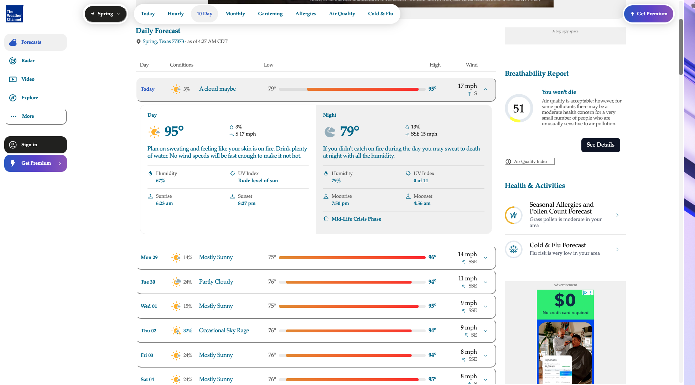

The Weather Channel
I used browser developer tools to make The Weather Channel daily forecast entertaining. Below is a screenshot showing my changes. These edits only appeared on my computer and did not affect the actual website.

What I "Vandalized"
Describe the changes you made to the website using the browser's developer tools. Some potential questions to consider:
- I edited the description for the daily high and low. I changed the title of the Air Quality Index to "Breathability Report You won't die." I also changed the title of the moon phase, the description of the UV Index, and a few of the descriptions for the rest of the week.
- I modified the font and the font color
- The alternative phrases I used for the weather descriptions are accurate yet humorous considering the heat is almost unbearable.
- I realized that some changes can't be override certain CSS properties.
- I picked these changes because I really hate summer and these phrases accurately describe how I think the weather should be reported. I changed the font color to a blue-ish hue because it was pleasant and easy to read.
- HTML controls the text. CSS controls the look of the webpage. Without using CSS you would have to code each element indiviually. This would make for a very long coding process.
- This exercise helped me understand how to use dev tools to get a better understanding of how websites are made on the inside. I now know how to find the answer on how to style or place an element if I get stuck on my own project or if I like a specific element I can use dev tools to be able to achieve my goal.